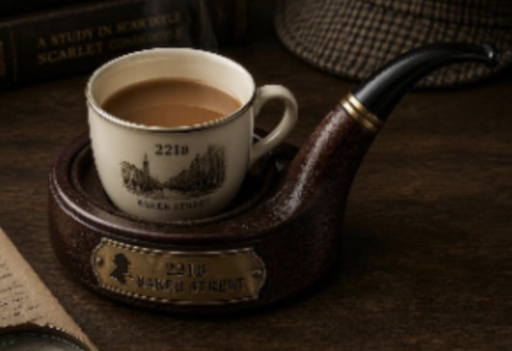

Here is a drink coaster that Sherlock Holmes might have had an engineer create for him. The process of image generation was interesting to me, I found it interesting to play with how modifying the prompt changed the image. It was interesting to interact with a fiction character and to try to guess their preferences before the chatbot created an output.
Created using ChatGPT and MicrosoftCopilot